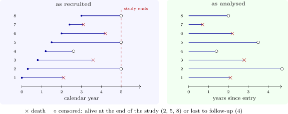

1.2 Censoring
For those \(63\) patients the survival time is not known; we know only that it is longer than the time at which they were last seen. Such an observation is right censored. It is the most common kind of incompleteness in survival data, and it arises for several reasons:
- the study ends before the event has happened (administrative censoring);
- the subject is lost to follow-up: moves away, stops attending;
- the subject withdraws, or dies of a cause unrelated to the one being studied (if that cause is the event of interest, this is the competing-risks problem of a later section).
Three patterns are distinguished. In Type I censoring the study stops at a fixed time, so everyone still alive then is censored at that time. In Type II censoring, used in reliability testing, the study stops when a fixed number of items have failed. Most clinical studies have random censoring: patients enter at different calendar times and the study ends on one date, so each has a different potential follow-up time (Figure 1).
Other kinds of incompleteness are left censoring, when the event is known only to have happened before some time (a test shows that an infection has already occurred), and interval censoring, when it is known only to have happened between two visits. Left truncation, or delayed entry, is different: subjects enter the study only if they have survived to some time, so short survivors are never seen at all, as when patients are recruited at a clinic some time after diagnosis.

The key assumption. Almost every method in this course assumes that censoring is non-informative: a subject censored at time \(c\) has the same chance of the event afterwards as subjects still under observation at \(c\). Administrative censoring usually satisfies this. Censoring because a patient became too ill to attend does not: those patients are more likely to die soon, and treating them like the others makes survival look better than it is. The assumption cannot be checked from the data alone, so it must be argued from how the study was run.
Questions on this section
Stuck on something here? Ask below and it stays attached to this topic.